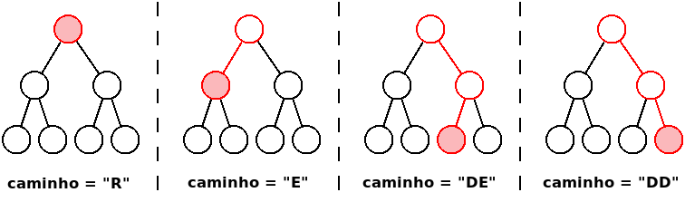
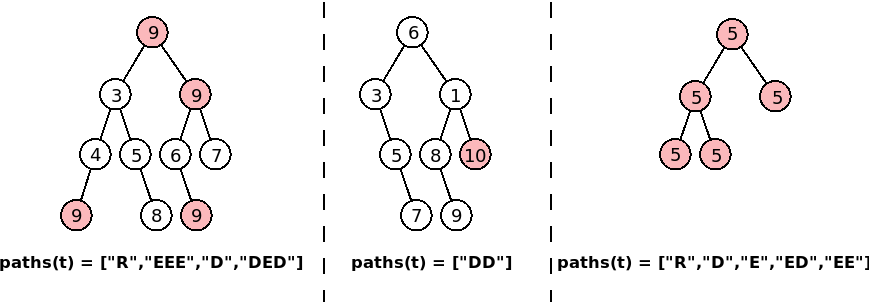

Neste problema deverá submeter uma classe ED240 contendo um método estático paths como a seguir descrito (não é necessário um programa completo)
Pode assumir que no Mooshak terá acesso a todas as classes base dadas nas aulas, incluindo as de árvores binárias (não precisa de as incluir na submissão).
Pode fazer download de todas as classes num arquivo zip ou ver as classes uma a uma.
[PROBLEMAS PARA DOWNLOAD]
Para precaver uma possível intermitência na ligação de internet, podem e devem fazer download de todos os problemas em:
https://mooshak.dcc.fc.up.pt/~edados/_teste_p2_/NUM_MECANOGRAFICO.zip (onde NUM_MECANOGRAFICO deve ser substituido pelo vosso número mecanográfico)
Deve devolver um array contendo todos os caminhos na árvore que vão dar ao valor máximo que é possível encontrar na árvore. O tamanho do array deve ser igual ao número de vezes que o máximo aparece na árvore, e os caminhos podem vir em qualquer ordem dentro do array (não precisa de se preocupar com a ordem).
Cada caminho é representando por uma string contendo uma sequência de caracteres 'E' e 'D' indicando como chegar ao nó correspondente quando se começa na raíz. Se o nó for a raíz, o caminho é simplesmente "R". A figura seguinte ilustra alguns caminhos possíveis para chegar ao nó a vermelho.

Armado com este conhecimento, pode agora compreender a figura seguinte, que ilustra algumas árvores t, e qual o array que o método ED240.paths(t) deve devolver, contendo os caminhos para todas as ocorrências do valor máximo, indicadas nos nós a vermelho (note que a ordem dos caminhos não tem de ser esta):

É garantido que as árvores testadas com o seu programa são pequenas (100 nós no máximo), pelo que não tem de se preocupar (demasiado) com a eficiência.
Os exemplos correspondem às três árvores da figura.
| Árvore t em preorder | Exemplo de possível valor devolvido por ED240.paths(t) |
|---|---|
| 9 3 4 9 N N N 5 N 8 N N 9 6 N 9 N N 7 N N | ["R", "EEE", "D", "DED"] |
| 6 3 N 5 N 7 N N 1 8 N 9 N N 10 N N | ["DD"] |
| 5 5 5 N N 5 N N 5 N N | ["R","D","E","ED","EE"] |
Teste Prático de Estruturas de Dados (CC1007)
8 de Junho de 2020